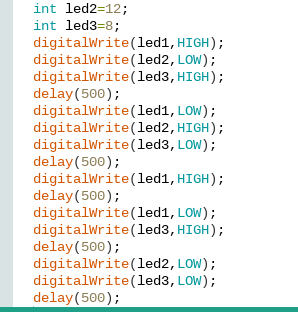
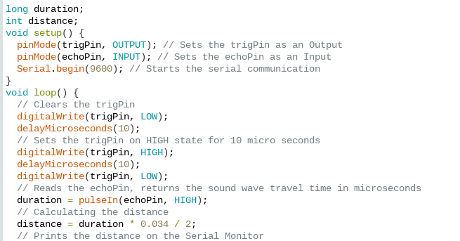

September 2 2022 I am going to start finishing up my goldburg machine
September 5-8 This week I finished my goldberg machine and started on the groups project and I also made some part of the minecraft diamond sword.
September 9 At Friday our class made a letter "E" as an challenge.
September 12-14 This week I made the goldburg machine with my group in real
September 15-16 At Thursday and Friday This clss did the challenge paper boat and I am going to write a report about today. lesson of the day is that surface area is important(also attacking other people boat with your boat is important
September 26-30 At this week we did bioengineering at the class and made the prosthetic for the tiger
October 3-7 Through Mon day and Wendsday our class dissected computer
For the Challenge on Thursday our class did "Is there more door or wheel in CV campus
September 19-23 Worked on making the goldberg machine
goldberg machine
October 10-14 Mr. Poole explained about aerospace and decirbed about 4 power act on things trying to fly which is pull, lift, thrust, and drag.
On Tuesday I formed on group and had to think about the best way to make a rocket fly far as possible. Our group chose to make an glider shaped rocket for the project
because I thought gliding could make the rocket fall slowly while moving forward.
October 17-21 For this week we cad our glider and made it into real but because there was too much wind, wing was not large enough, and wing was attached so weakly that it flied off
October24-27 For this week our glass made out the filter out of the gravel, rock, cotten and sand which filtered water successfully.
October 31-November 4 Our class started on Electrical Engineering and started on the breadboading on the tinker cad.
I also learned abut ohms law which is RI=V, V/I=R V/R=I
November 7-10 This week our class worked on bread board circit. Me and my partner made one bulb one, 2bulb series and 3 bulb parallel This weeks challenge was choosing and pursing if writing to 1milion is better or doing 1 years course of math class is better. Me and my partner chose math class. More information is in PDF form.
November 14-18 This week our class worked on the Arduino and made the light bulb blink and turn on&off based on pattern.

Nov 17 Our class worked on how to save the Lake Carcinogen that is full of the bromate which does chemical reaction when it meets witht the sunlight. The answer that actually was the shade bulb covering the river.
Nov 28-Dec 2 Our learned about civil engineering Monday which is related to constrution of many things. On Tuesday Mr. Poole introduced about our final spagatti birdge. On Wendsday our group made the drawing of the bridge. On Thursday we made prototype of the bridge. I am scared Mr Poole later saying just attaching all of the spagatti was the right answer.
Our Photo of Prototype
Dec 5-Dec 15 Our group finished up the proto #1 but broke it right away. We did not had enough time to make 2nd prototype so we made the final based on the Theo's design. The design was making bunch of triangles and connecting it to make the bridge.
Dec 8 last week our group worked on making efficient freeway as possible but got lowest scores
Jan 9-13 On the Monday our class got to hear presentation business engineering from Mr. Poole and talked about Trolley problem.
On the Tuesday we started the project about the business engineering and thought about few different ideas. On Wed to Fri my partner and me made a presentation about auto nail cutter
Jan 16-19 This week was presentation week there was lot of unreal thing which made me think if the product could be really sold or not.
Jan 19 My group presentation was done without Theo who was absent my group could have done better if he was here today. There was lot of group that wanted people to invest more than their net worth but audience wanted to pay less than the net worth if the product did not looked very good.
I think some of the stuff was too over priced or made too cheaper compared to real one.
I think offer from student were much better than our offer which was 650+paying off our debt for exchange $2 royalty for each unit.
Jan 23-27 This weeks on Monday our class learned about the Non-Newtonian fluid and on Tues day our class went outside and made Oobleck.
On Wends day our class started on new project where you can choose between Mousetrap car, Arduino Car, and Campus reseach.
Jan 21 On Friday our class work on making card tower which does not work very well for me
Jan 30-Feb 3 This week Monday through Tuesday my group finished document on Monday and on Tuesday I worked on Tinker CAD. On Thursday the chllange was to make a longest bridge out of post it and our group's length was 115 inch.
Feb 6-Feb 10 This week Monday I worked on HC-06 which is a bluetooth module and my teammate worked on programming the ultrasonic sensor for the Arduino we could not check if it works or not.
Also, because our team got only two motor we worked on making two extra wheel for the Arduino Car.
Feb 9 On the challenge day I worked on Delivering water balloon to the other side of basketball court. We made base large a possible but I hink the balloons were heavier than I thought.

Feb 20-Feb 24 This week I worked with the battery and tried to connect the bluetooth but failed I will try last time on next week!
Feb 27-Mar 3 This week I worked on trying to make car run by 12v and still tried the HC-05 but failed. My car was to heavy and I think I did nto programed it right because it moved backward when noting was in front and stopped so much. I learned that there is lot of circuit is required even for the simple thing and programming the arduino car is hard. I wish when I knew the future I would have chose the mouse trap car.
Mar 6-Mar 10 Monday I uploaded the video to the website. Wendsday class watched Mark Rover's video about mousetrap car and if egg would crack if you dropped from the space. Tuesday I researched about the aerospace engineering and made into a slide. On Thursday our class worked on gutter boat challenge our boat was moving but it was too heavy to float on the water and balance was not right.
Mar 21-Mar 24 During the spring break I watched antman and wasp:Quantumania, eat in&out, go to IHOP, Dave and Buster, and made meal for myself.
During this week I made design for egg drop project and work on egg drop tinker CAD. First we are going to put foam ball around egg and put that in balloon and connect balloon to string then connect other end of the sting to the parasuit. There would be 2 parsuit one as main and other as sub parasuit.
Mar 27~Mar 31 On Monday our group started building the egg drop project. Tues our group started making parasuit. Wendsday our group made the box and filled up with cotton ball. Thursday our group attached box with parasuit. Friday testing day!
Mar3-Mar7 On Monday through Thurday our days were simple our team did research and made lot of design on tinker CAD.
Mar10-Mar14 This week our team concentrated on making prototype of our real boat. Our prototype is 5 times smaller than the real boat.
Our group chose to build boat that is rectangle shape with least cutting as possible by using folding. We chose our boat as a rectangle shape because rectagle shape is easiest to make than any other shape. And V-shaped bottom can cause leaking and can make boat easily out of balance when it is not perfect.
And our group is going to use paddle for rowing and we placed the roll between seating and bottom of the boat to slow down the sitting.
Mar17~20 This week our group worked on protype and tested it. Our team's prototype sank with only 9 pound when it should hold 40 pounds. Because it sank sideway to increase the stability to the boat width of the boat should be increase by large value.